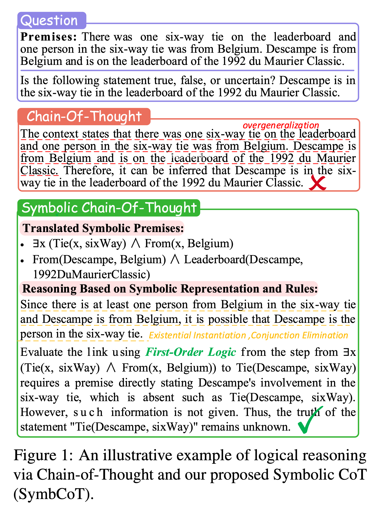
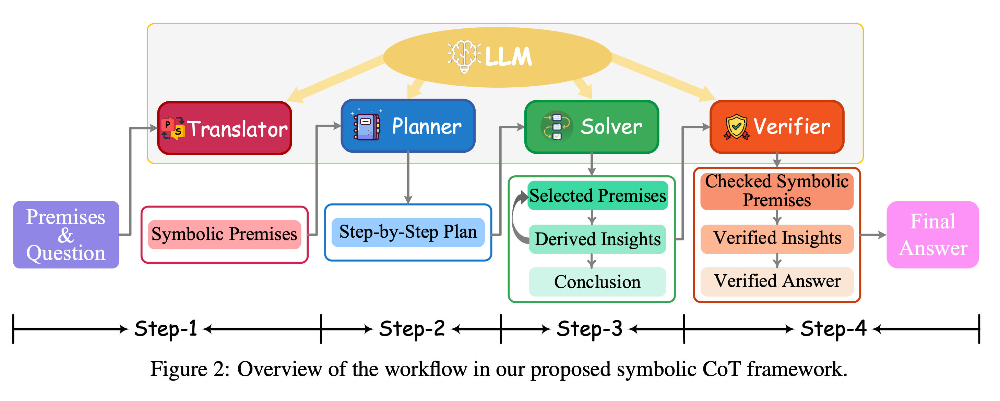
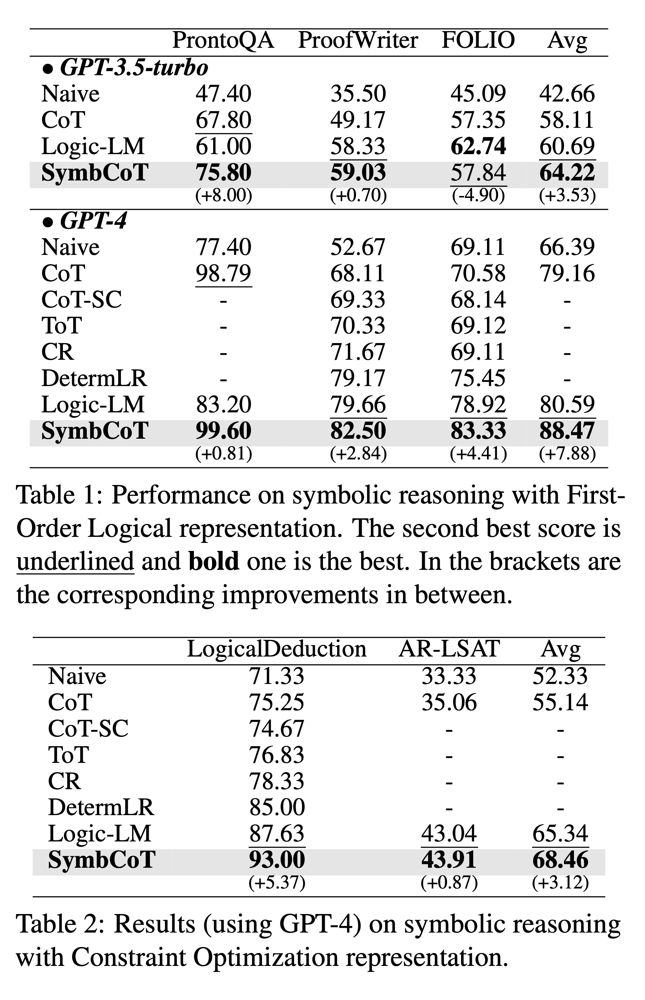

SymbCoT is a neuro-symbolic reasoning framework that keeps everything inside the LLM. It decomposes logical reasoning into three key stages: (1) a Translator maps natural language premises and questions into symbolic expressions (FOL or CO); (2) a plan-then-solve stage uses the LLM as a Planner to outline symbolic inference steps and a Solver to execute them as a symbolic chain-of-thought; and (3) a Verifier retrospectively checks both the faithfulness of the symbolic translation and the validity of each reasoning step. All modules are implemented via prompting the same backbone LLM, avoiding external solvers while tightly coupling natural language, symbolic forms, and formal logical rules.

The paper evaluates SymbCoT on five logical reasoning benchmarks that cover both First-Order Logic and Constraint Optimization settings (e.g., PrOntoQA, ProofWriter, FOLIO, LogicalDeduction, AR-LSAT), comparing against vanilla CoT and strong neuro-symbolic baselines. SymbCoT yields substantial accuracy gains, especially on problems that require deeper, more structured reasoning, and produces reasoning chains that are more logically faithful and easier to inspect.

For more details and analysis, please refer to the paper and supplementary materials provided in the project page.
@inproceedings{
author={Jundong Xu and Hao Fei and Liangming Pan and Qian Liu and Mong-Li Lee and Wynne Hsu},
title={Faithful Logical Reasoning via Symbolic Chain-of-Thought},
booktitle={The 62nd Annual Meeting of the Association for Computational Linguistics},
year={2024},
url={https://arxiv.org/abs/2405.18357}
}